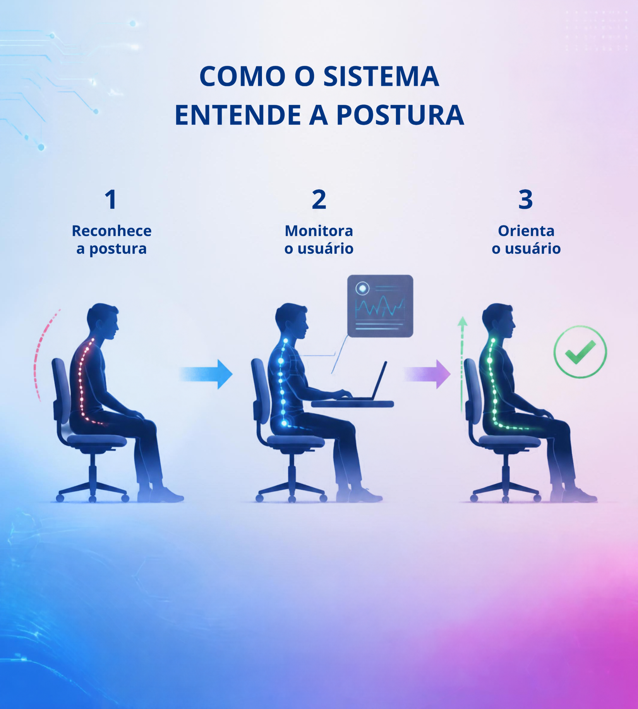
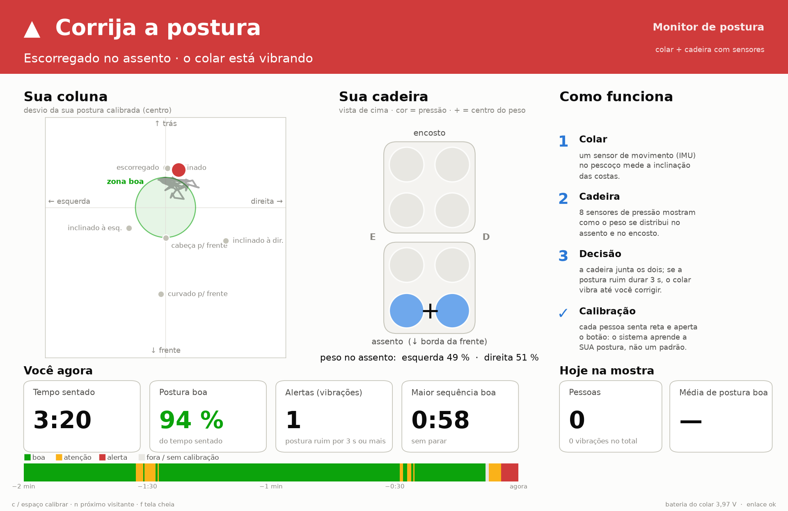
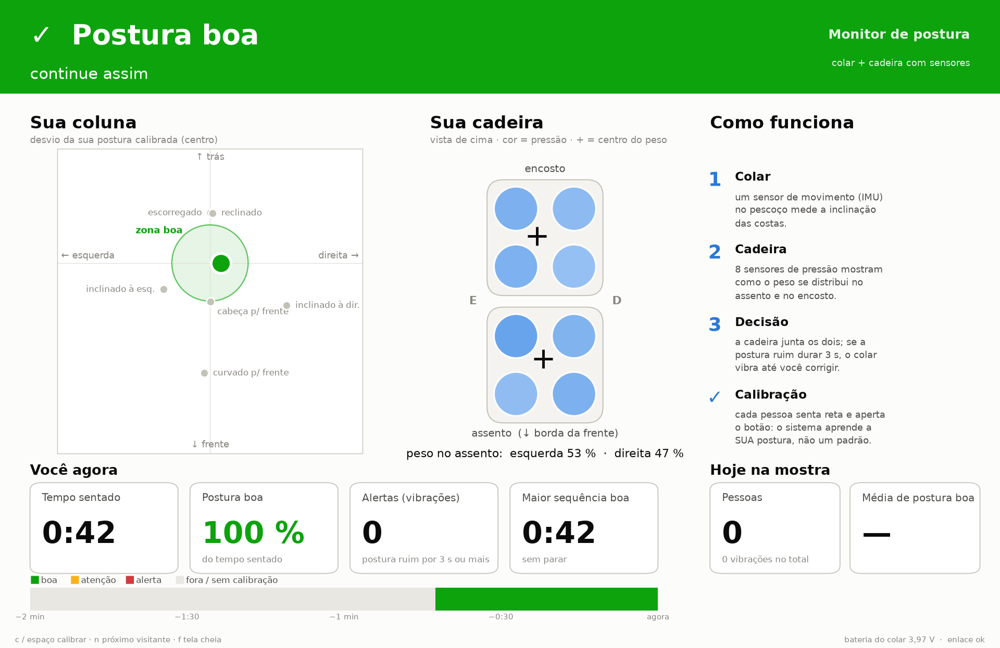

TCC · Mostra de ciência 2026
Monitor
de postura
Um colar e uma cadeira com sensores que avisam, com uma vibração, quando você sai da postura certa.
André Thomas Monteiro
Um colar e uma cadeira com sensores que avisam, com uma vibração, quando você sai da postura certa.
André Thomas Monteiro
E a postura vai escorregando sem a gente perceber. Só notamos quando já dói.
em cada 10 trabalhadores de escritório têm dores musculares ou na coluna ligadas ao trabalho.
72–81 % · Okezue et al., 2020; Mohammadian et al., 2025
Um sensor de movimento nas costas, logo abaixo do pescoço, mede quanto o tronco inclina: para a frente, para trás e para os lados.
E tem um motorzinho que vibra.
8 sensores de pressão, 4 no assento e 4 no encosto, mostram como o seu peso se distribui.
É o “cérebro”: junta tudo e decide.

Você senta reto e aperta o botão: o sistema aprende a sua postura certa, não um padrão.
O colar manda a inclinação para a cadeira 20 vezes por segundo, sem fio.
Postura ruim por 3 segundos → o colar vibra. Corrigiu, para.
As costas quase não inclinam, mas o fundo do assento fica vazio. Só a cadeira percebe.
As costas inclinam para trás, mas o quadril está no fundo da cadeira. Descansar não é postura ruim.
Levantou com o colar? Ninguém no assento, nada de vibrar.
das posturas ruins
geraram alerta
alertas falsos sentado bem,
só colar → colar + cadeira
Cada pessoa foi testada com uma regra ajustada só com as outras 7 (ela nunca tinha sido “vista”).


Coloque o colar e sente reto, com as costas no encosto.
Aperte o botão e fique parado: o sistema aprende a sua postura.
Tente curvar, inclinar, escorregar… e sinta o colar vibrar.
Reclinar e cruzar as pernas? Pode: não vibra. Consegue bater o recorde do dia?
Perguntas? Pode sentar e testar.